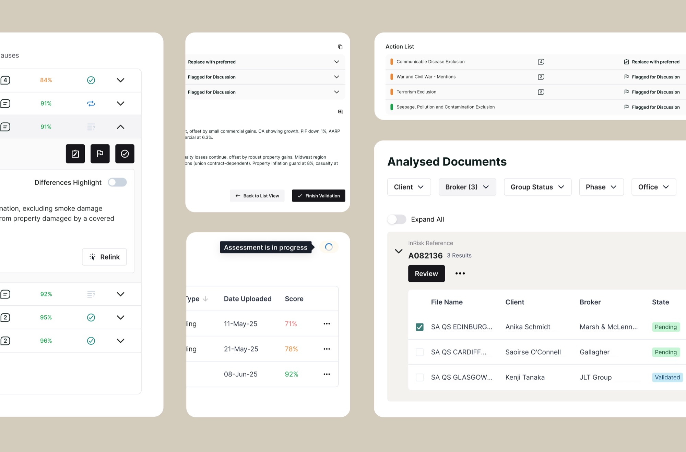
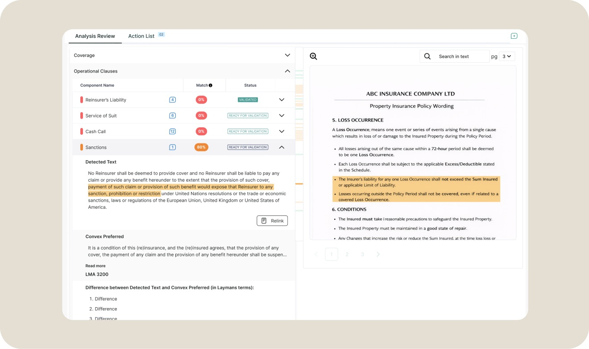
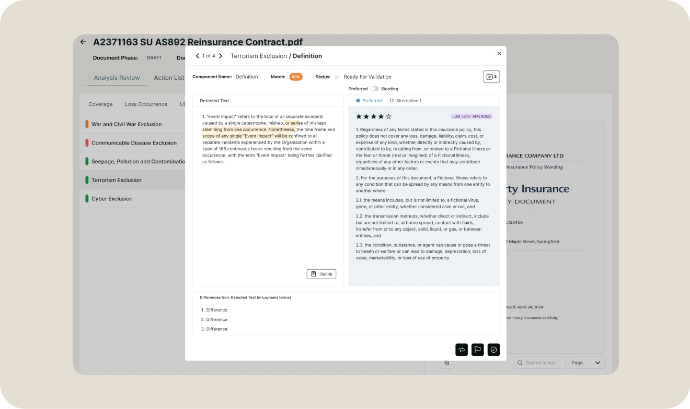
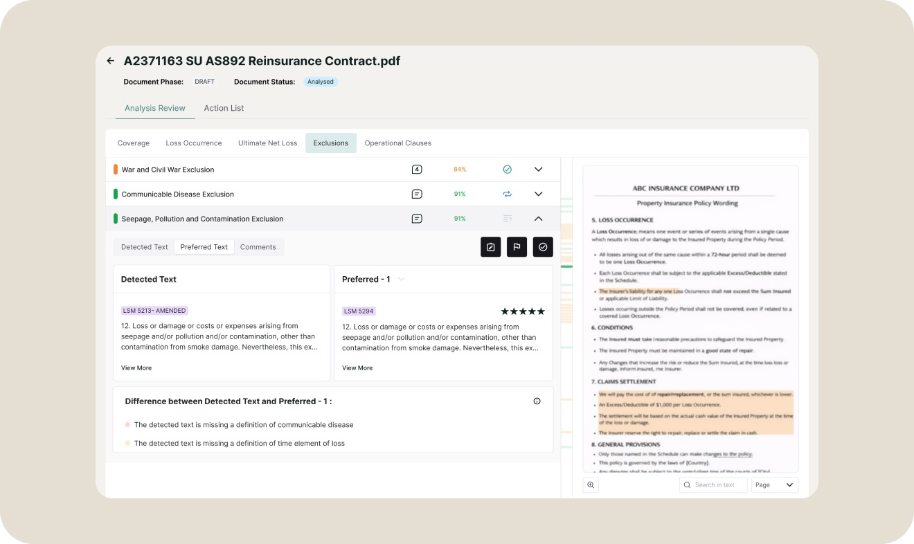
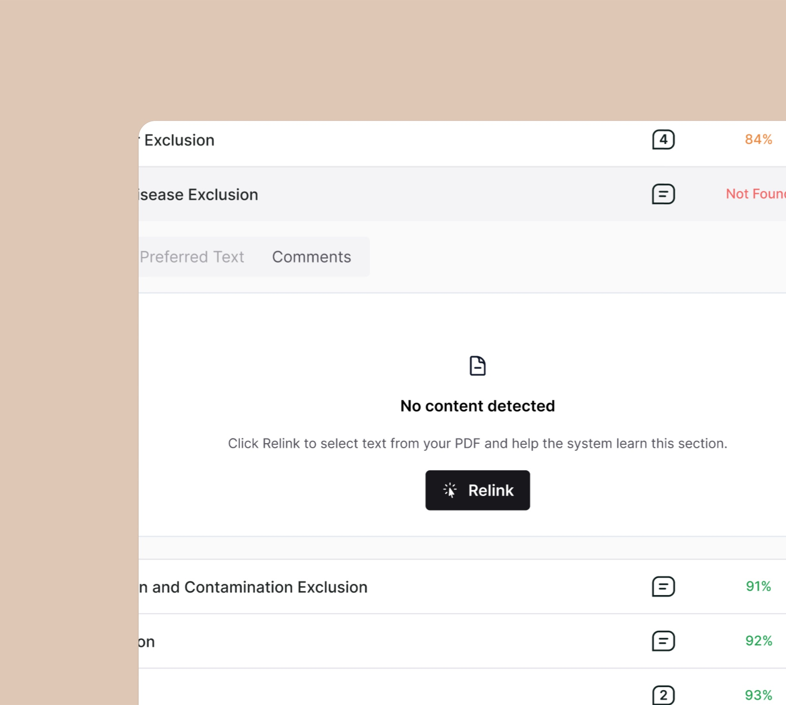
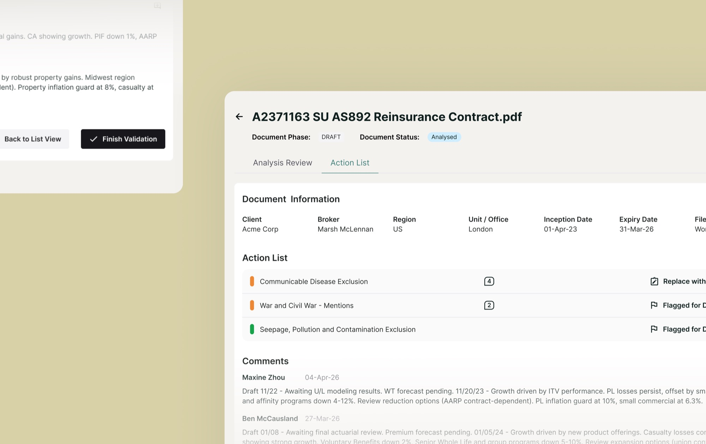

AI-Augmented Contract Analysis Platform
Designing trust into AI-powered contract analysis for high-pressure insurance workflows.

My Role
Product Designer (Sole Designer)
Key Outcomes
- Streamlined contract review during critical renewal periods
- Designed continuous AI training into the workflow, in a way that felt natural to users
- Built user trust through transparent AI verification design
Additional Complexity
- Remote collaboration with a dev team in France
- Tech constraints: LLM latency, and the inability to build a specific layout
- Ecosystem consistency: aligned with two products and fed insights into a core product
The Problem
Fragmented, high-stakes workflows
During busy renewal periods, underwriters analyse hundreds of reinsurance and insurance contracts under tight deadlines. Their workflow is chaotic — constantly switching between:
- Contract PDFs
- Email chains
- Notes documents
- Slack conversations
- Dropbox files
We needed a solution that could
- Make contract review instantaneous, not time-consuming
- Simplify checking against complex underwriting rules
- Reduce compliance risk and financial exposure
How might we accelerate contract analysis without compromising thoroughness, accuracy, or user confidence in AI-generated insights?
Research and Discovery
I conducted stakeholder interviews with underwriters and product managers to understand their workflows, pain points, and needs during high-pressure renewal periods.
Key insights that shaped the design
- Navigation must be instantaneous and mirror the document's natural flow
- Users question AI accuracy — the design should communicate transparency and verifiable sources
- AI assistance should feel like productive work, not extra overhead
Design Evolution
I went through three distinct layout approaches, testing each with PMs and users to land on the optimal information hierarchy that also fit within the dev team's technical constraints.
Early prototype
This is what the UI looked like when I first joined the project.
#Christmas tree · #Unclear IA · #Long scroll · #Content gets lost

Explored modal-based details (users' favourite)
- Rebalanced the information hierarchy across multiple layers of detail
- Consolidated all detailed information in a modal to minimise visual noise
*(Blocked by the dev team due to technical constraints.)*

Hybrid tabs + accordion (final)
- Parent accordions organised by document section, mirroring contract order
- Enables side-by-side comparison with one click

AI-powered comparison with source verification
Detected wording is compared against preferred language in a clear side-by-side view with concise risk summaries, enabling decisions in seconds.

Human-in-the-loop machine training
Underwriters can quickly verify or relink AI-detected text within the “Text” view, embedding feedback directly into their normal review workflow. Each correction improves model accuracy over time, ensuring the system evolves with real user judgement.

Natural review workflow
Key validation actions are surfaced at the point of review, enabling one-step decisions and preserving underwriters' analytical flow.
Action list for faster collaboration
Instead of jumping between components to recall what needs discussion, underwriters get a consolidated view of every flagged item, suggested alternative, and comment at a glance. When everything checks out, a single 'Finish Validation' click closes the loop.
